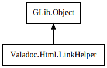

LinkHelper
Object Hierarchy:

Description:
public class LinkHelper : Object
Content:
Properties:
Creation methods:
Methods:
- public virtual string? get_package_link (Package package, Settings settings)
- public string? get_relative_link (Documentation from, Documentation to, Settings settings)
- protected string translate_wiki_name (WikiPage page)
- protected virtual string? from_package_to_package (Package from, Package to)
- protected virtual string? from_package_to_wiki (Package from, WikiPage to)
- protected virtual string? from_package_to_node (Package from, Node to)
- protected virtual string? from_wiki_to_package (WikiPage from, Package to)
- protected virtual string? from_wiki_to_wiki (WikiPage from, WikiPage to)
- protected virtual string? from_wiki_to_node (WikiPage from, Node to)
- protected virtual string? from_node_to_package (Node from, Package to)
- protected virtual string? from_node_to_wiki (Node from, WikiPage to)
- protected virtual string? from_node_to_node (Node from, Node to)
Fields:
Inherited Members:
All known members inherited from class GLib.Object
- interface_find_property
- interface_install_property
- interface_list_properties
- @new
- new_valist
- newv
- new_with_properties
- add_toggle_ref
- add_weak_pointer
- bind_property
- connect
- constructed
- disconnect
- dispose
- dup_data
- dup_qdata
- force_floating
- freeze_notify
- @get
- get_class
- get_data
- get_property
- get_qdata
- get_type
- getv
- is_floating
- notify_property
- @ref
- ref_sink
- replace_data
- replace_qdata
- remove_toggle_ref
- remove_weak_pointer
- @set
- set_data
- set_data_full
- set_property
- set_qdata
- set_qdata_full
- set_valist
- setv
- steal_data
- steal_qdata
- thaw_notify
- unref
- watch_closure
- weak_ref
- weak_unref
- notify
- ref_count